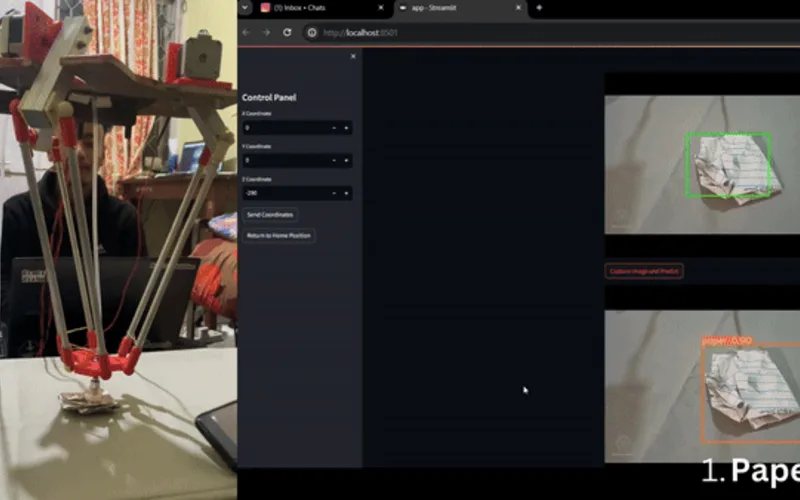
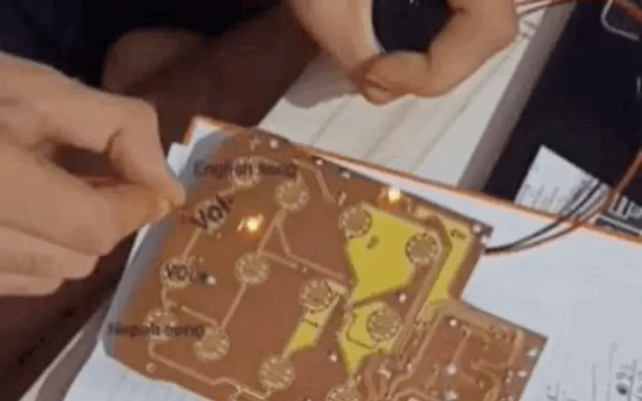
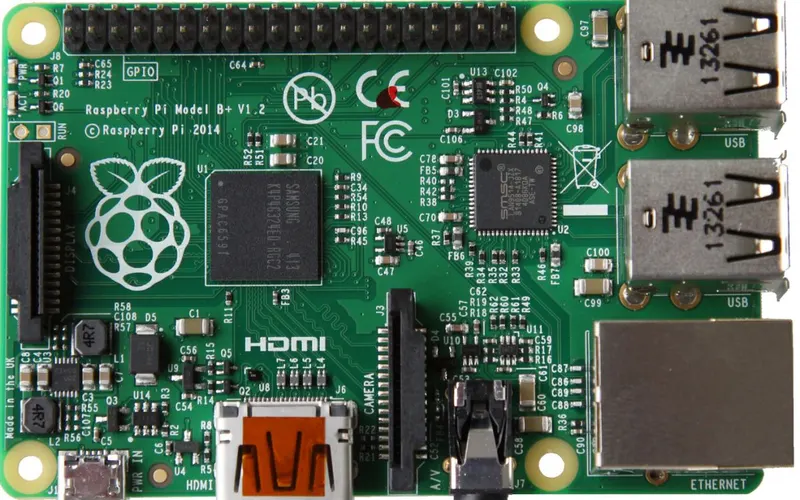
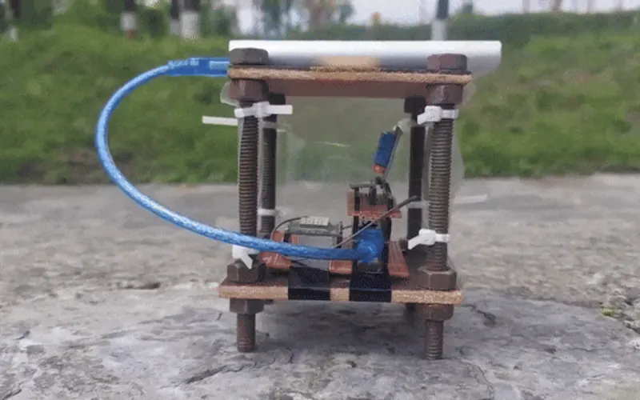
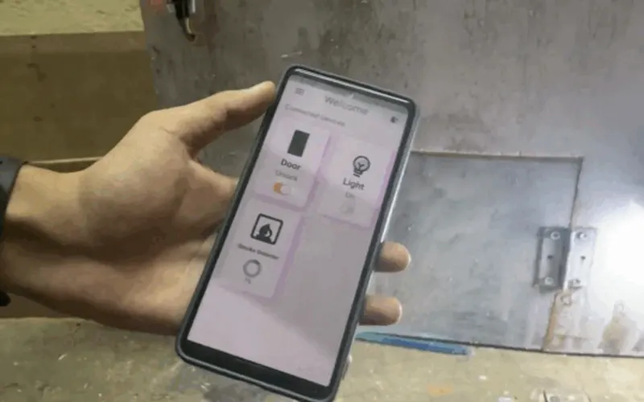
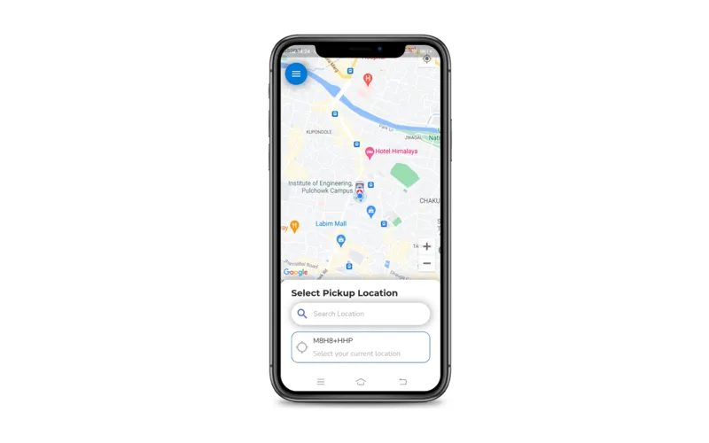
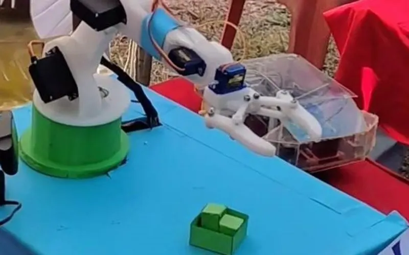

Shiva Shrestha
PhD Student in Computer Science, Kennesaw State University
I am a Graduate Research Assistant working with Dr. Honghui Xu. I work on secure and private AI for edge devices: federated fine-tuning of on-device LLMs, privacy in medical AI, and drones that can sense, decide and defend themselves without a cloud connection.
Before my PhD, I completed a B.E. in Electronics, Communication and Information Engineering at Tribhuvan University, IOE Pashchimanchal Campus. I graduated at the top of my faculty, did undergraduate research with Asst. Prof. Smita Adhikari and worked as an electronics engineer at Yarsa Tech.
News
- Aug 2026Posted Thermo-FL and Masking Is Not Enough on arXiv.
- Apr 2026Our survey on privacy and security in mobile LLMs was accepted in Big Data Mining and Analytics.
- 2026MedSpeak was accepted at ICASSP 2026.
- 2026Built KESTREL, an offline AI search-and-rescue drone, at the AGI Hackathon.
- 2025DP-FedLoRA received the Best Paper Runner-Up Award at IEEE ICDM 2025.
- 2025KDLLM was published in Tsinghua Science and Technology.
- Aug 2025Started my PhD in Computer Science at Kennesaw State University.
Publications
* equal contribution. Full list on Google Scholar.
-
ICASSP 2026
MedSpeak: A Knowledge Graph-Aided ASR Error Correction Framework for Spoken Medical QA
IEEE International Conference on Acoustics, Speech and Signal Processing
-
ICDM 2025 Best Paper Runner-Up
DP-FedLoRA: Privacy-Enhanced Federated Fine-Tuning for On-Device Large Language Models
IEEE International Conference on Data Mining
-
Tsinghua Sci. Tech. 2025
KDLLM: Copyright-Preserving LLM based on Knowledge Distillation
Tsinghua Science and Technology
-
BDMA 2026, accepted
A Survey: Towards Privacy and Security in Mobile Large Language Models
Big Data Mining and Analytics
-
JAICN 2024
Automated Waste Sorting with Delta Arm and YOLOv8 Detection
Journal of Artificial Intelligence and Capsule Networks
-
IOE Graduate Conference 2024
Deep Learning for Waste Management: Leveraging YOLO for Accurate Waste Classification
15th IOE Graduate Conference
Preprints
Projects
Drones and research systems
-
UAV-MAID: Intrusion Detection for Drone Swarms
UAV-MAID judges each drone in a swarm by what its honest neighbors overhear it relay. It combines a random forest, an attention-based relay network and a flight-relative outlier detector into one trust verdict per drone, and a classifier names the attack type. On 567 simulated ns-3 flights, it detected 80% of attack types never seen in training, compared with 59% for the best of ten baselines.
-
KESTREL: Offline AI Search-and-Rescue Drone
An operator marks a search area on a phone or describes it in chat. A Jetson Orin Nano on the drone plans the survey with an on-device Gemma model, uploads it to a Pixhawk 6X and flies it once a person approves. It finds the person with YOLO, a thermal camera and CLIP, then writes a flight summary with photos. Everything runs on the drone, with no internet connection.
-
DamageScout: UAV Building Damage Assessment
An onboard pipeline for post-disaster building inspection on a drone with a Jetson and a Pixhawk. It runs YOLOv5 in flight, records video and telemetry, geolocates each detection and groups repeated sightings into building-level damage records using FEMA-aligned categories.
-
Thermo-FL: Thermal-Aware Federated Fine-Tuning
A federated fine-tuning method for LLMs on edge devices. It adapts training to each device's temperature, sends sparse LoRA updates and uses robust aggregation.
-
ClinX: Privacy-Preserving Medical VQA
A privacy-preserving pipeline for medical visual question answering. It finds and masks patient information with OCR, restores the masked images with a PP-GAN and checks with LLaVA-Med that they are still useful.
-
Edge-LLM Intrusion Detection
Detects unusual system-call activity on a Raspberry Pi using n-gram features and an Isolation Forest. An LLM then explains each alert.
Software
-
Tarakosh: Vedic Astrology Web App
A browser-based, open alternative to Jagannatha Hora built on PyJHora and the Swiss Ephemeris. It draws birth charts and 23 divisional charts and computes panchanga, Vimsottari dashas, Shadbala, Ashtakavarga, transits and 36-point matching. It works in English, Nepali and Hindi.
-
Pana Reader: Offline PDF and EPUB Reader
An Android reader for PDF and EPUB files that works without an account, a backend, ads or network permission. It has a library with collections, bookmarks, highlights and notes, offline full-text search, reading statistics and paper, sepia and night themes.
Embedded systems and robotics
-

Delta Arm Waste Classifier
A delta robot that uses YOLOv8 detection to sort biodegradable, paper, plastic and metal waste. It reached 0.98 mAP@50 on a custom labeled dataset.
-

STM32 Multilingual Toy
An STM32-based educational toy that plays stories and songs in English and Nepali, using onboard flash, a DAC and an audio amplifier.
-

Smart Cloud Printer
Turns legacy printers into connected devices using a Raspberry Pi, CUPS and MQTT, so print jobs can be sent and monitored remotely.
-

High-Altitude Weather Prediction via LoRa
Weather stations in high-altitude regions without cellular coverage send data over LoRa, and an XGBoost model forecasts the weather.
-

Smart Access System
An ESP32 RFID access-control system with smoke detection, automatic lighting and a phone app.
-

Sajilo Ambulance: Triage Prediction
An ambulance dispatch app that uses SVM and random forest models to predict patient triage levels and outcomes.
-

Six-Axis Robotic Arm
A robotic arm that mirrors hand gestures, classifies objects with AI and picks and places them on its own.
Experience
-
Graduate Research Assistant, Kennesaw State University
Apr 2025 – PresentResearch on secure and private LLMs for edge devices, federated fine-tuning with LoRA and differential privacy, and security and autonomy for drones and drone swarms.
-
Electronics Engineer, Yarsa Tech, Nepal
Mar 2024 – Aug 2024Built an ESP8266 audio system with SPI flash and an STM32 multilingual toy. Set up cloud printing with a Raspberry Pi, CUPS and MQTT, and automated industrial barcode printing.
-
Robotics Club, IOE Pashchimanchal Campus
2021 – 2024Member, Design Transformer, then Senior Member. Led graphics and branding, ran PCB design and embedded programming workshops, and built a micromouse, an FPV drone, a battlebot and a robotic arm for national competitions.
Education
-
Ph.D. in Computer Science, Kennesaw State University
Aug 2025 – PresentEdge security, federated learning and on-device LLMs. Advisor: Dr. Honghui Xu.
-
B.E. in Electronics, Communication and Information Engineering, Tribhuvan University
2019 – 2024IOE Pashchimanchal Campus. 82.32%, Faculty Topper.
Honors
- 2025Best Paper Runner-Up, IEEE ICDM (DP-FedLoRA)
- 2024Faculty Topper, B.E., IOE Pashchimanchal Campus
- 2024Winner, NSU Demo and E-GEN Expo; Runner-Up, ICES Datathon
- 2023Winner, MechTRIX
- 2017District Topper, NEB +2 Science
Service
- 2026Reviewer, IEEE Transactions on Dependable and Secure Computing (TDSC)
- 2026Reviewer, IEEE International Conference on Tools with Artificial Intelligence (ICTAI 2026)
- 2026Reviewer, IEEE International Performance Computing and Communications Conference (IPCCC 2026)
- 2026Reviewer, ACM Conference on Trustworthy and Responsible AI and Computing Systems (TRUST 2027)
Writing
- Jul 2020Apple: The Trendsetter
- Jul 2020Google Pixel: Software versus Hardware
- May 2020Tesla: Future of Transportation?
- May 2020Rise of Zoom
- May 2020Future of Smartphones
Contact
Email me at sshres16@students.kennesaw.edu or sh7vashrestha@gmail.com. I'm also on GitHub, LinkedIn, Google Scholar and Instagram.